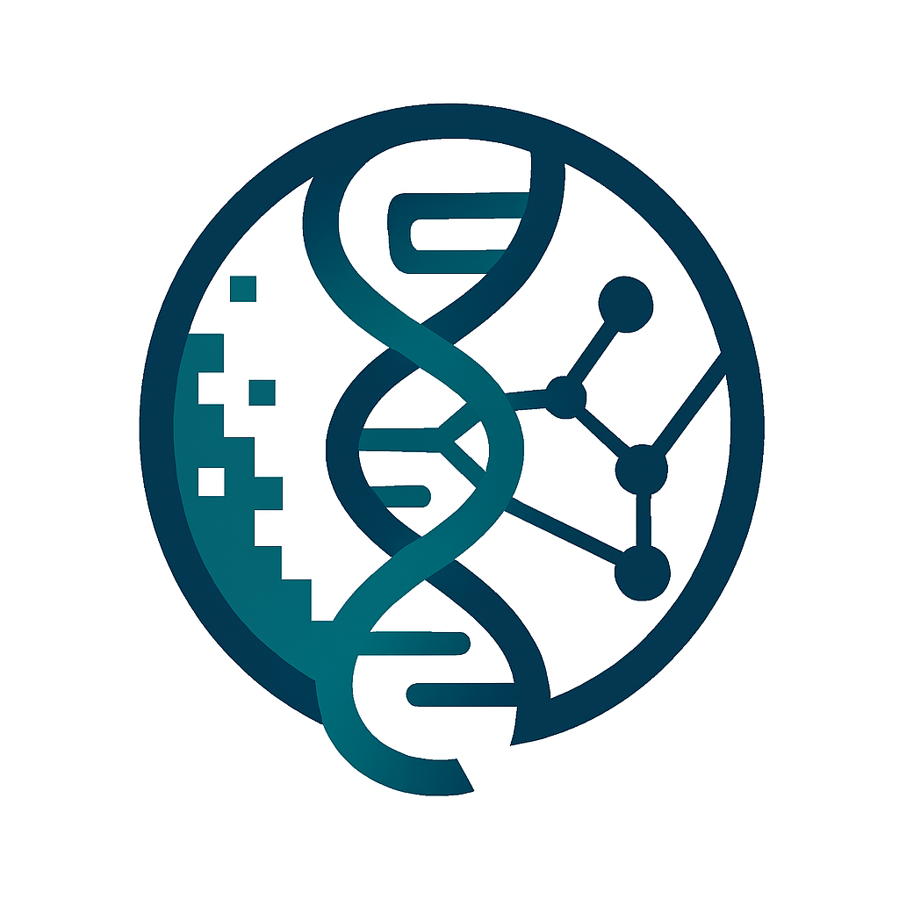

We are a computational genomics research group in the Department of Genome Sciences at the University of Virginia School of Medicine. Our research focuses on developing innovative computational methods and bioinformatics tools to advance genomic discovery. We are particularly interested in leveraging cutting-edge sequencing technologies, including next-generation sequencing, long-read sequencing (PacBio HiFi and Oxford Nanopore), and emerging multi-omics platforms to better understand human genome variation and its role in health and disease.
The rapid evolution of sequencing and biotechnology is transforming biology at an unprecedented pace. Our lab is dedicated to leveraging these breakthroughs to extract meaningful insights from both healthy and diseased genomes. By combining innovation in bioinformatics with state-of-the-art sequencing platforms, our ultimate goal is to advance precision medicine and improve human health.
While numerous tools exist for next-generation sequencing, the sheer volume and complexity of modern data demand new, more sensitive, and more efficient computational methods. Third-generation sequencing platforms such as PacBio and Oxford Nanopore provide long reads spanning thousands of base pairs, offering tremendous potential for haplotype resolution and genome assembly. However, these platforms are also characterized by high error rates, presenting significant analytical challenges. Our research develops novel algorithms to overcome these barriers and unlock the full value of TGS data. In addition, we address data generated by emerging biotechnologies—including 10X Genomics, strand-seq, and advanced single-cell sequencing—designing solutions tailored to these rapidly evolving data types.
Structural variations (genomic rearrangements) play a central role in shaping genetic diversity within and between species. Yet their functions and underlying mechanisms remain incompletely understood. Our group investigates these complex variations through integrative and hypothesis-driven approaches, exploring phenomena such as chromothripsis and other large-scale rearrangements to shed light on their biological consequences.
A disease represents a disruption of normal phenotype, often resulting from a complex interplay of genetic, epigenetic, and environmental factors. Our lab explores fundamental questions at this interface, including the identification of disease-causing variants, integrative pan-disease and pan-cancer genomics, and multi-omic data analysis. Through these efforts, we aim to deepen understanding of the genotype-to-phenotype relationship and contribute to improved diagnosis, prognosis, and therapeutic strategies.
In the past few years, we have established extensive collaborations across the UAB community and with partners nationwide. We envision to expand the fruitful collaborations at UVA. These collaborations strengthen our ability to tackle challenging problems at the intersection of computational biology, genomics, and medicine.
